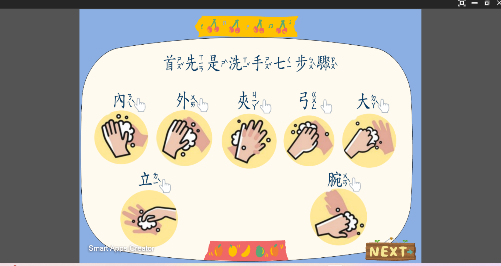
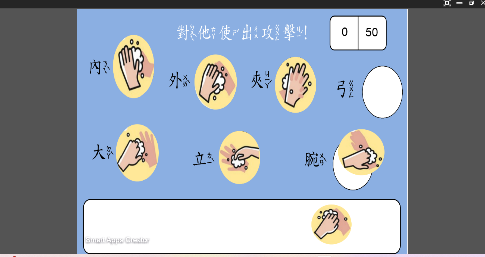
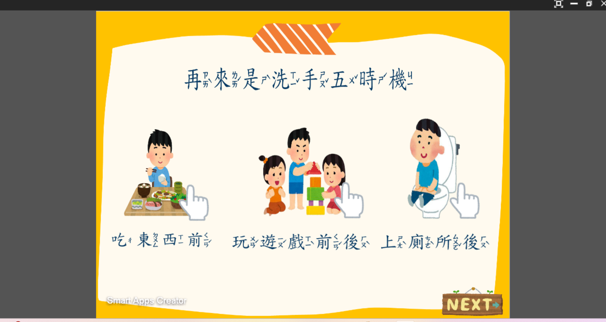
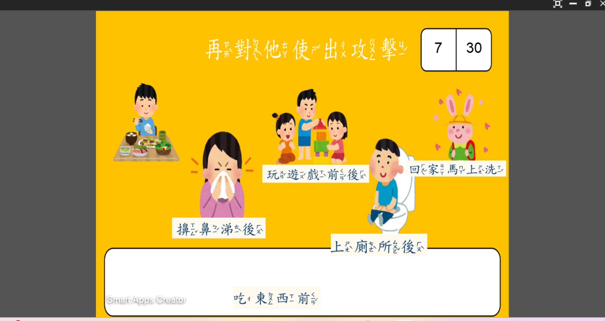

專為幼兒園學童量身訂做的多媒體互動衛教教材。將衛福部推廣的「洗手七字訣」與「洗手五時機」拆解為生動的步驟解說與闖關練習，讓孩童在遊戲中輕鬆培養良好的衛生習慣。

運用可愛的圖像與動作分解，逐步示範「內、外、夾、弓、大、立、完」的搓洗技巧，幫助學童加深手部清潔步驟的視覺記憶。

以趣味闖關方式驗收學習成效，孩童需在遊戲中依照正確順序完成手勢或動作配對，透過即時回饋提升練習動機與成就感。

結合日常生活情境，介紹「吃東西前、如廁後、擤鼻涕後、看病前後、接觸幼兒前」等洗手黃金時機，建立隨時自我保護的觀念。

設計情境辨識挑戰題，引導學童判斷在不同的生活場景下「現在該不該洗手」，將正確觀念自然落實於日常行為中。